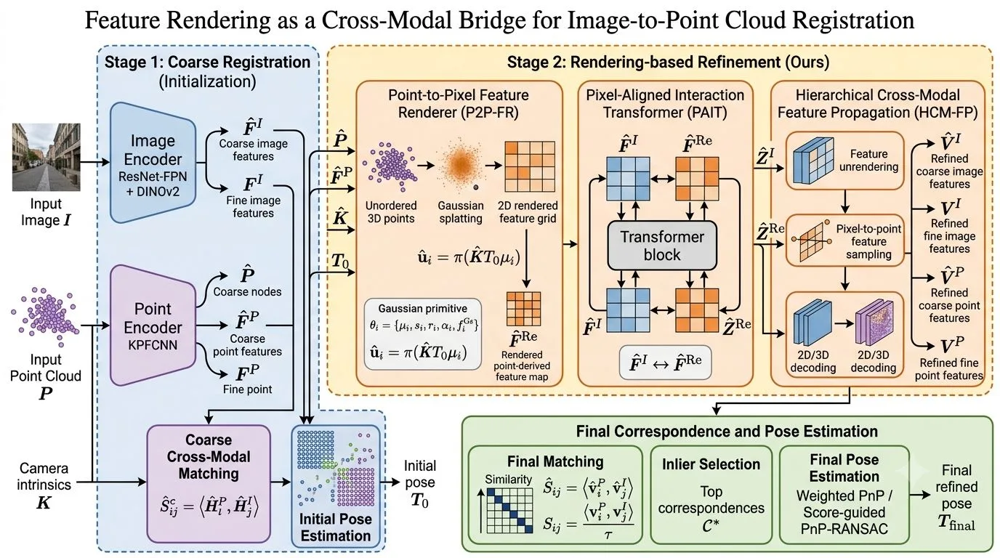
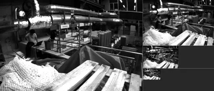
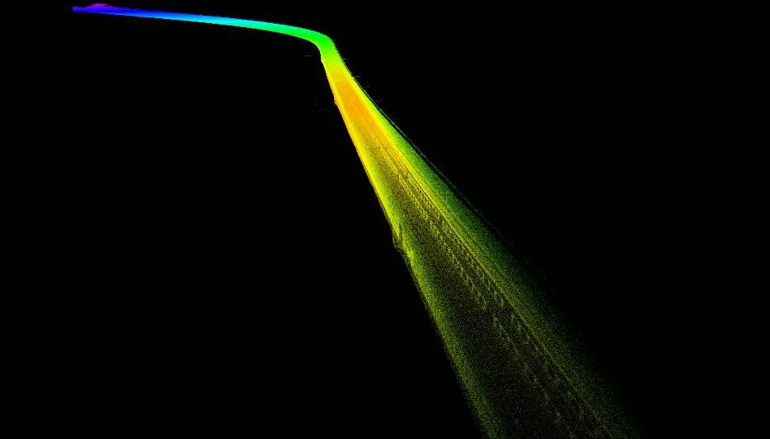
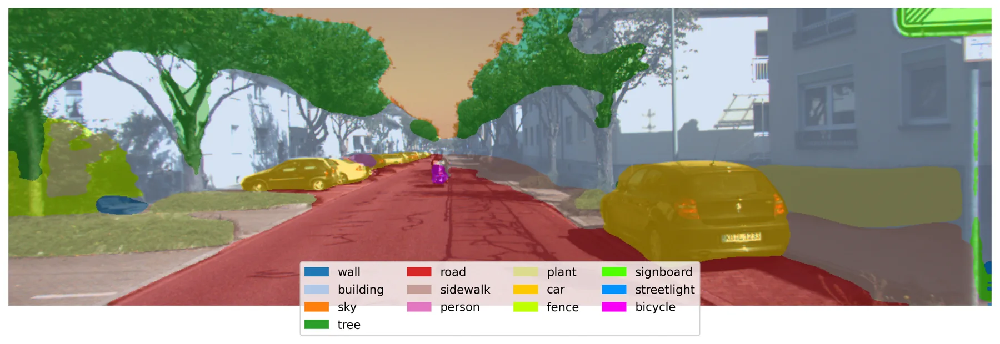

新论文 · 日期 2026-09-23 · score 32 · S层 · Geometry Foundation Models / 3D Foundation Models · cs.RO, cs.CV
内容级别：完整单篇海报
作者：Jaafar Mahmoud, Arthur Movsesyan, Mikhail Iumanov, Sergey Kolyubin
评分 32/10
单目—惯性 SLAM前馈几何初始化Depth Anything 3位姿条件化稠密建图重力保持子图图优化
一句话工作总结：把前馈几何模型放在 VIO 滤波器的两侧——前面负责无特征点启动、后面接受滤波器米制位姿的条件化来产稠密地图，尺度只在视线方向修正而不动基线。
相机加 IMU 是米制定位与稠密建图的最小传感器配置，但经典视觉—惯性滤波器必须等到视差足够才启动，且只保留稀疏路标；前馈几何模型能从少量图像预测稠密结构，却既不给米制尺度也不给重力方向。论文提出 DAVIO：用同一个多视图深度模型 Depth Anything 3 同时承担启动与建图。启动阶段用五帧图像窗口与预积分 IMU 构成无特征点线性系统，其经过条件数检验的稳健解通过缓冲回放自举出一个 VIO 滤波器；跟踪…
A camera and an IMU are the minimal sensor setup for metric localization and dense mapping, yet classical visual--inertial filters must wait for parallax before they start and then retain only sparse landmarks…

新论文 · 日期 2026-09-24 · score 19 · S层 · Geometry Foundation Models / 3D Foundation Models · cs.CV, cs.AI, cs.CG
内容级别：完整单篇海报
作者：Jerrin Bright, John Zelek
评分 19/10
3D 基础模型米制化人体标尺伪标签中间层 query-key 探针持久人物身份关联Sim(3) 窗口组合
一句话工作总结：把“人”当作离线标尺给上尺度 3D 基础模型的场景 token 学出米制换算，再从冻结 backbone 的中间层 query-key 特征里读出人物身份做关联，从而在无外部尺度网络、无独立跟踪器的情况下做前馈人—场景重建。
3D 基础模型能在一次前向里恢复视频相机与几何，但其中最强的若干模型只到尺度未知；人—场景联合重建因此还缺两个量：米制尺度与持久的人物身份。论文问：能否只用一份上尺度基础表示，通过轻量适配同时支持这两者。精确米制标签稀缺，但无标注野外视频充足，于是用精选网络视频中的人物来初始化解：一个已摆好姿态的米制人体加 2D 关键点，给出近似闭式的尺度伪标签；这些伪标签预训练一个 Scale Readout，再与轻量适配器一起…
3D foundation models recover video cameras and geometry in one forward pass, but some of the strongest are up to scale. Joint people-scene reconstruction then requires two missing outputs: metric scale and per…

新论文 · 日期 2026-09-25 · score 18 · S层 · Learning + Geometric Optimization SLAM/VIO · cs.CV
内容级别：完整单篇海报
作者：Luca Gandolfi, Simone Nascivera, Roberto Pellerito, Rong Zou
评分 18/10
帧—事件融合视觉里程计自适应相关门控纯事件跟踪模态感知关键帧剔除可微 BA 补丁图
一句话工作总结：把图像与事件的相关证据分开保留、用逐边学习门控在对应层融合，并把纯事件观测塞进同一张补丁优化图，从而在 RGB 稀疏或退化时显著延缓里程计退化。
视觉里程计是 GPS 缺失环境下自主导航的关键，但基于 RGB 的方法仍易受运动模糊、光照挑战与丢帧影响；事件相机以高时间分辨率与高动态范围补充常规相机，其异步量测却让可靠对应估计更困难。论文提出 DAPEVO：在学习型视觉里程计里于共享补丁位置上分别估计图像与事件的对应，并在运动精化前融合两者的相关证据。每个被跟踪补丁维护图像与事件两套描述子，一个学习到的标量门控为每条补丁—帧边融合模态相关的相关嵌入，再送入共享…
Visual odometry is essential for autonomous navigation in GPS-denied environments, yet RGB-based methods remain vulnerable to motion blur, challenging illumination, and dropped frames. Event cameras complement…

新论文 · 日期 2026-09-22 · score 17 · S层 · Geometry Foundation Models / 3D Foundation Models · cs.CV
内容级别：完整单篇海报
作者：Karim Slimani, Catherine Achard, Eric Marchand, Brahim Tamadazte
评分 17/10
2D—3D 配准高斯特征泼溅像素对齐跨模态注意力位姿条件化精化置信度引导 RANSAC
一句话工作总结：先用初始位姿把无序点云描述子以高斯泼溅渲成图像对齐的特征图，让两种模态在同一像素网格上做双向注意力交互，再解码回点云节点做稠密匹配与位姿估计。
论文提出 GRIP：一个位姿条件化的像素—点匹配与 2D—3D 配准精化框架。给定粗略初始位姿，GRIP 针对“网格化图像描述子”与“无序点云描述子”之间的结构性错配，用高斯特征泼溅把学习到的 3D 点特征软渲染到图像网格上；随后由像素对齐的 transformer 把渲染出的点派生特征图与图像特征融合，使视觉语义线索与几何线索在共享的 2D 表示中交互。被精化的特征再解码并传播到更细分辨率，用于稠密对应估计与最终…
This paper introduces GRIP, a pose-conditioned refinement framework for pixel-to-point matching and 2D to 3D registration. Given an initial coarse pose estimate, GRIP addresses the structural mismatch between…

新论文 · 日期 2026-09-23 · score 13 · S层 · Geometry Foundation Models / 3D Foundation Models · cs.CV
内容级别：完整单篇海报
作者：Shufan Sun, Chen Wang, Enxin Song, Jiatao Gu
评分 13/10
单图 3D 场景合成层次化思维链VLM 空间关系推理几何落地精化（轮廓+点云）反思式反馈环
一句话工作总结：让 VLM 负责“谁靠着谁、谁在谁上面、谁朝向谁”的关系推理与分阶段摆放，让视觉几何基础模型（VGGT 点云 + 轮廓）负责把摆放细化到米制位置与尺度，每阶段渲染回看纠错，全程不训练任何模型。
组合式 3D 场景重建近期沿两条路探索：能提供空间关系语义理解、但缺少与输入图像精确对齐的智能体推理，以及能从输入图像预测稠密点图、但重建质量受限的视觉几何基础模型。因此，从单张单目图像恢复兼具准确物体间关系与高保真重建质量的完整 3D 场景仍然困难。论文提出 HARMONY：一个同时利用智能体推理与视觉几何基础的层次化思维链框架。给定一幅室内场景图像，HARMONY 从空的 3D 平面图出发，先相对参考图像标定相…
Compositional 3D scene reconstruction has recently been explored from two directions: agentic reasoning that provides semantic understanding of spatial relationships but lacks precise alignment with input imag…

新论文 · 日期 2026-09-25 · score 14 · A层 · Embodied Navigation / VLN / Spatial Reasoning · cs.RO
内容级别：半海报
作者：Timofei Kozlov, Dmitrii Maliukov, Andrey Marchenko, Dmitrii Plotnikov
评分 14/10
在线语义高斯—TSDF 建图定位中断桥接（影子跟踪+PnP）版本化场景模型与持久物体 ID类型化工具与确认门VR 遥操作闭环
一句话工作总结：把机器人在线构建的高斯—TSDF 地图升级为一个带持久物体 ID 与重建质量的版本化「场景模型」，让语音与指向通过类型化工具落到同一份状态上，并用影子跟踪与关键帧锚定 PnP 在定位中断时保住地图坐标一致性。
照片级 3D 视图能告诉遥操作者机器人在哪里，却不能说明场景里有什么、每个物体被观测得有多好，也无法把指向与语音变成机器人动作。CognitiveReality 把机器人的 RGB-D 流变成一张实时、语义索引的高斯—TSDF 地图，由 VR 中的操作员与一个会使用工具的語言智能体共享。单个 mapper 二进制通过配置即可服务任意平台：它接收来自机器人 SLAM、关节运动学、动捕或内置视觉跟踪器的位姿，用影子跟踪…
A photorealistic 3D view tells a teleoperator where a robot is, but not what the scene contains, how well each object has been observed, or how to turn pointing and speech into robot action. CognitiveReality t…

新论文 · 日期 2026-09-25 · score 23 · A-层 · Real-time / GPU Robotics Systems · cs.RO, cs.CV
内容级别：简报式摘要
作者：Ole Hoffmann, Mateo de Mayo, Daniel Cremers
评分 23/10
Vulkan 跨平台 GPU 加速视觉—惯性里程计实时因果估计边缘设备部署厂商无关算力
一句话工作总结：把 VIO 的 GPU 加速从 CUDA 单一厂商路径改写成厂商无关的 Vulkan 实现，从而能在工作站、笔记本与廉价单板机上跑同一套实时因果里程计。
机器人与 XR 中的感知本质上依赖良好的状态估计，视觉—惯性里程计（VIO）与视觉惯性 SLAM 是在成本可控前提下达成这一目标的成熟途径，而系统效率决定了设备能否更小、更凉、更轻。GPU 加速是降低延迟的自然选择，因为嵌入式计算机、手机与 XR 头显上普遍存在 GPU；但既有工作把加速限制在 CUDA 上，把部署选择压缩到单一厂商。论文转而使用厂商无关的 Vulkan API——它原本是为 3D 图形应用的严苛性…
Perception in robotics and XR fundamentally relies on good state estimation. Visual-inertial odometry (VIO) and Simultaneous Localization and Mapping (VI-SLAM) are proven ways of achieving this goal in a cost-…
新论文 · 日期 2026-09-22 · score 11 · B层 · Geometry Foundation Models / 3D Foundation Models · cs.CV
内容级别：简报式摘要
作者：Shuangzhi Li, Qiaoqiao Jia, Xingxin Chen, Guile Wu
评分 11/10
摄影构图指引几何感知表示学习几何基础模型先验混合奖励强化学习图像编辑
一句话工作总结：把视觉几何基础模型的几何先验注入构图编辑模型的中间表示，并用“指令遵循＋美学＋几何一致”的混合奖励做强化学习，输出构图指引与合成范例。
摄影构图旨在为改善取景、视角与画面空间安排提供视觉指引。早期方法主要依赖图像裁剪来改善构图，受限于输入图像的视角与空间安排；近期方法探索用图像理解与编辑来改善构图，但主要关注指令遵循与美学质量，忽略了 3D 场景几何一致性对构图的重要性。本文提出 GeoComposer：一个几何落地的摄影构图框架，它分析给定图像的构图并生成文字指引，同时合成一幅能改善该构图的可视范例。为促进几何落地的构图，作者提出几何感知的表示学…
Photographic composition aims to provide visual guidance for improving the framing, viewpoint, and spatial arrangement of an image. Early methods primarily rely on image cropping to enhance composition, which…

新论文 · 日期 2026-09-24 · score 17 · B-层 · Traditional LiDAR/Visual SLAM · cs.RO, cs.CV, eess.SY
内容级别：简报式摘要
作者：Mingle Zhao, Jiahao Wang, Tianxiao Gao, Chengzhong Xu
评分 17/10
FMCW 多普勒激光雷达流形状态估计多普勒辅助观测模型动态点剔除退化环境鲁棒性
一句话工作总结：直接把 FMCW 多普勒激光雷达的瞬时点速度引进流形上的观测模型，用多普勒判据剔除动态点，从而在几何退化环境中维持精度与鲁棒性。
传统激光雷达—惯性里程计（LIO）或 SLAM 方法高度依赖环境的几何特征，因为激光雷达主要提供距离量测而非运动量测。随着调频连续波（FMCW）多普勒激光雷达的出现，这一局面改变：FMCW 多普勒激光雷达不仅以高分辨率提供点的距离，还通过多普勒效应捕获瞬时点速度。本文提出 FMCW-LIO，一种利用 FMCW 多普勒激光雷达内禀多普勒量测的新型鲁棒 LIO：为正确利用多普勒速度，作者设计了运动补偿方法，并在流形上应…
Conventional LiDAR-inertial odometry (LIO) or simultaneous localization and mapping (SLAM) methods heavily rely on geometric features of environments, as LiDARs primarily provide range measurements instead of…

新论文 · 日期 2026-09-23 · score 13 · B-层 · Traditional LiDAR/Visual SLAM · cs.CV, cs.RO
内容级别：简报式摘要
作者：Preeti Chatterjee, Jin Lu, Jin Sun, Suchendra M. Bhandarkar
评分 13/10
语义—运动先验连续对应调制零样本运动分ORB-SLAM3 扩展跨域鲁棒关联
一句话工作总结：把“动态/语义不可信”从二值剔除改成连续的对应代价，在特征匹配阶段降权而非删除，从而在保住 BA 几何支撑的同时降低轨迹漂移。
基于局部描述子的双目视觉 SLAM 系统受语义歧义、实例混淆与独立运动物体困扰，三者都会破坏数据关联并累积成轨迹漂移。主流语义与动态 SLAM 方法通过二值化特征剔除来应对，以牺牲对应密度换取外点抑制。作者主张“上下文不合理性”更适合表达成分级量而非排除准则，并提出 Know-Your-Scene（KYS）-SLAM：作为 ORB-SLAM3 的模块化扩展，用连续的对应调制取代特征剔除，其贡献是把上下文证据重构为对…
Stereo visual SLAM systems built on local descriptors suffer from semantic ambiguity, instance-level confusion, and independently moving objects, each corrupting data association and accumulating as trajectory…